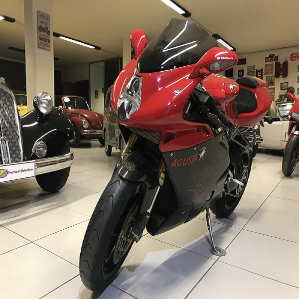
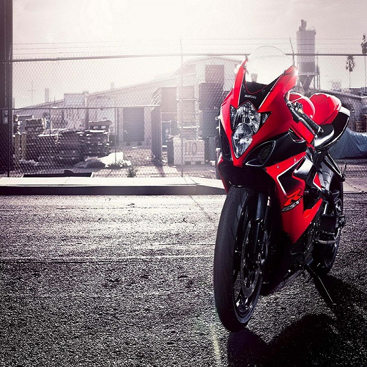

#The Ducati Supersport Bike
The term race replica was then also used to
distinguish the period
of sport bike production
from Japan and Europe since the mid-1980s having
integrated
race-styled bodywork, representing an
evolution from the superbike period that began in
1969.[34] The sport
bike, or race replica,
era began with the 1983 Suzuki RG250 Gamma,
Ducati super bike
When it comes to speed and performance, you’d probably first think of the Japanese motorcycle brands Yamaha, Kawasaki, Honda or Suzuki or the European Ducati, Aprilia and KTM. All these manufacturers, except Kawasaki, dominate the MotoGP with their most advanced racing technology. For those adrenaline junkies that are going crazy for speed and performance, these brands are among the most popular choices.
Every rider has his favourite memory, being about his first-ever motorcycle, first ride, riding experience, and whatever it is, it brings you back to the good old days. Classic and vintage motorcycle brands represent the best history has .
When it comes to speed and performance, you’d probably first think of the Japanese motorcycle brands Yamaha, Kawasaki, Honda or Suzuki or the European Ducati, Aprilia and KTM. All these manufacturers, except Kawasaki, dominate the MotoGP with their Every rider has his favourite memory, being about his first-ever motorcycle, first ride, riding experience, and whatever it is, it brings you back to the good old days. Classic and vintage motorcycle brands represent the best history has .Read More
Latest Sports Bike
A sportbike, or sports bike, is a motorcycle optimized for speed, acceleration, braking, and cornering on paved roads, typically at the expense of comfort and fuel economy by comparison with other motorcycles.[1] Soichiro Honda wrote in the owner's manual of the 1959 Honda CB92 Benly Super Sports.
More DetailsTop Brands
A sportbike, or sports bike, is a motorcycle optimized for speed, acceleration, braking, and cornering on paved roads, typically at the expense of comfort and fuel economy by comparison with other motorcycles.[1] Soichiro Honda wrote in the owner's manual of the 1959 Honda CB92 Benly Super Sports.
More DetailsSuper Sports Bikes
A sportbike, or sports bike, is a motorcycle optimized for speed, acceleration, braking, and cornering on paved roads, typically at the expense of comfort and fuel economy by comparison with other motorcycles.[1] Soichiro Honda wrote in the owner's manual of the 1959 Honda CB92 Benly Super Sports. The Best Touring Motorcycles for the Wide Open Road
A sportbike, or sports bike, is a otorcycles.[1] Soichiro Honda wrote in the owner's manual of the 1959 Honda CB92 Benly Super Sports. The Best Touring Motorcycles fo optimized for speed, acceleration, braking, and paved roads, cornering on paved roads, motorcycles.[1] Soichiro Honda wrote in the owner's manualThe Best Touring Motorcycles for the Wide Open Road
A sports bike, optimized for speed, acceleration, braking, and cornering on paved roads, typically at the expense of comfort and fuel economy by comparison with other motorcycles.[1] Soichiro Honda wrote in the owner's manual of the 1959 Honda of the 1959 Honda
More Details